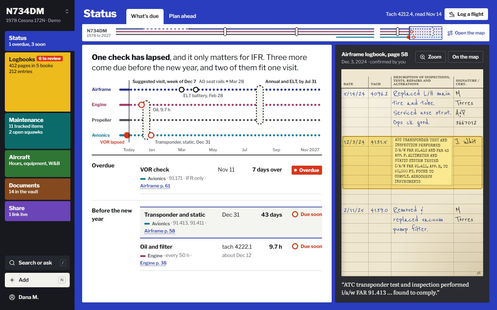
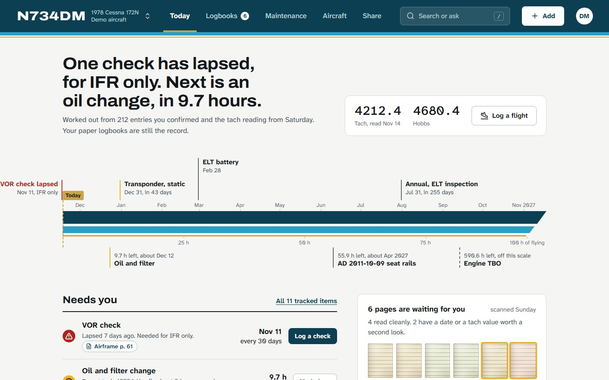
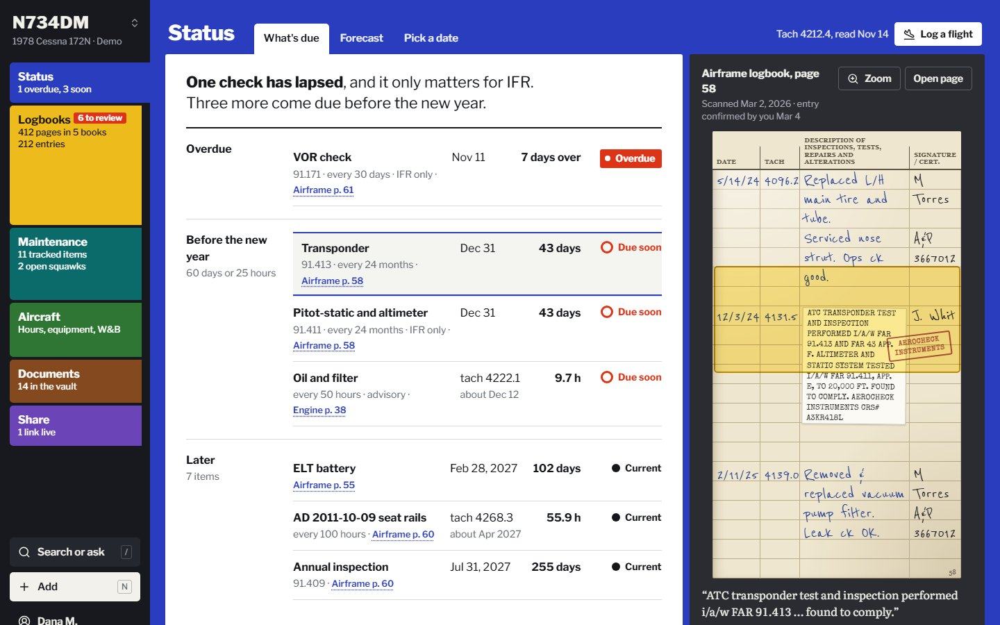
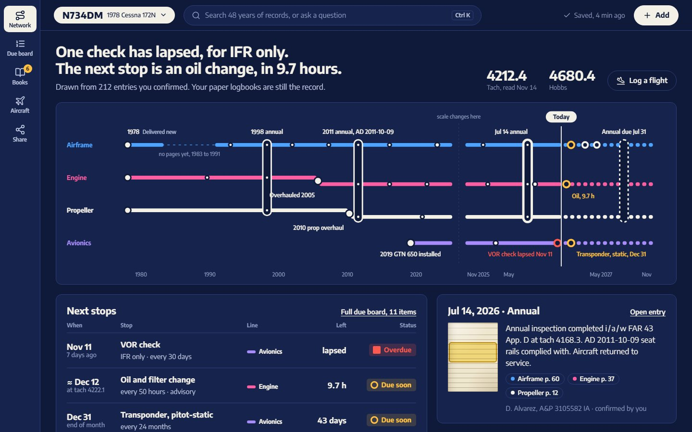

Four ways MyTailLog could look if it were built today
Each direction keeps every capability the app has now, adds the ones competitors have taught owners to expect, and reorganises fifteen sidebar items into five or six places. They differ in what the owner sees first and in how the app looks and feels. Direction D combines the two that resonated most.
- Direction D
- The three original directions
- How they compare
- What all three change
- Navigation, old and new
- Recommendation
- Moving from today's design
Direction D: the binder with a route map

D · Tabbed Binder
Added after the first review: direction B's binder, the layout owners recognise from their own tabbed logbooks, with direction C's line map bound into it. The map appears in three places: a spine of the aircraft's whole life across every section, a route map in Logbooks whose stops open their pages, and the line ahead in Status for planning shop visits.
The handoff package specifies D for a coding agent. It covers the web app and separate native iOS and Android apps: tokens, components, all 109 screens, flows, capabilities, data and API, the line map, accessibility, copy and a phased build plan.
The three original directions

A · Paint Scheme
The app wears the owner's aircraft: the header in the plane's own colours, the tail number as the logo, and the stripe under it turned into a timeline of what comes due. Light, large type, the calmest and most glanceable.

B · Section Tabs
The records binder every owner builds before an annual or a sale. Coloured tabs sized by how much each section holds, and every fact on a white leaf beside the scanned page that proves it. The strongest at proving things.

C · Line Diagram
Fifty years of records drawn as a transit map: each logbook a line, each entry a stop, each multi-book annual an interchange, and the stops ahead are what is due. Dense and the most distinctive; time is the way in.
How they compare
Filled dots are a judgment on a five-point scale, made from the mockups and the research. They are there to start the conversation, not to settle it.
| A · Paint Scheme | B · Section Tabs | C · Line Diagram | D · Tabbed Binder | |
|---|---|---|---|---|
| What leads | A sentence, then the year ahead | A sentence, then the due table with its page | A sentence, then the whole history and future | A sentence, the line ahead, then the due table with its page |
| Glance at the aircraft | Strongest | Line ahead | ||
| Proving a fact from the paper | Citation chips | Page beside every fact | Stops open their pages | Rows and stops both |
| Exploring decades of history | Strongest | Map and spine | ||
| Planning ahead | Horizon | Tables | Board | Visits on the lines |
| One-handed at the aircraft | ||||
| Readability for older eyes | 17px, light | 16px, light leaves | Dense; dark at the desk | B's, map in ink on white |
| Looks unlike any competitor | ||||
| Hand-off documents | A tabbed binder | A line map of the life | Map cover, tabbed body | |
| Effort to build from today | Lowest. Mostly new tokens, a new shell and the horizon chart. | Medium. The two-leaf layout touches most screens. | Highest. The network diagram needs its own layout engine. | Medium to high. B's layout plus one map component reused in three sizes. |
| Biggest risk | Owner-chosen colours; the horizon crowding in a busy year. | Six colours turning playful; the spread is cramped on phones. | A diagram some owners will need to learn; build cost. | Two systems on one screen crowding; kept apart by drawing the map only in ink on white leaves. |
What all three change
- A sentence first. Home says what the records show ("One check has lapsed, for IFR only. Next is an oil change, in 9.7 hours.") and changes with the situation: all clear, something coming, annual month, in the shop, being sold.
- One due list with both limits, the one that bites first named, hours turned into "about" a date, done in place. Registration and insurance expiries join it.
- A citation beside every number, dashed while only read by AI, solid once confirmed, marked when signed by a mechanic.
- One pipeline from paper to index: scan or drop pages, a visible queue with the daily reading allowance, reading in the background, a notice when it is done, one review desk.
- A review desk that shows the least certain field first, lights its ink on the page, and offers accept, edit or "not on this page", with keyboard shortcuts and "Confirm page and next".
- Share starts from the person: your IA, a buyer, an insurer, a co-owner. The right link or document follows, with expiry, revoke, a QR code and a view log.
- Logging a flight from a photo of the tach, Pick a date, squawks with photos sent to the mechanic, "do these together" for one shop visit, and reminders that carry the whole answer.
- Readable and reachable: body text 16 to 17px, light themes, 44pt targets, sync state always visible on the phone.
Navigation, old and new
Today's fifteen sidebar items and fourteen sub-tabs fold into five or six destinations, plus Add and Search-or-ask, which every direction shares.
| Today | A · Paint Scheme | B · Section Tabs | C · Line Diagram | D · Tabbed Binder |
|---|---|---|---|---|
| Overview, Status & forecast | Today | Status | Network | Status (What's due, Plan ahead) |
| AD / SB, Annual prep, Records gaps, Squawks | Maintenance | Maintenance | Due board | Maintenance |
| Capture pages, Review, Logbook pages, Timeline & Ask, Add an entry | Logbooks (capture and Add entry also in Add) | Logbooks | Books, and the Network itself | Logbooks (opens on the Map) |
| Hours & oil, Equipment & W&B, aircraft details | Aircraft (logging also in Add) | Aircraft | Aircraft | Aircraft |
| Records Vault | Aircraft › Documents | Documents | Aircraft › Documents | Documents |
| Pre-buy dossier, Sharing & transfer, record room links | Share | Share | Share | Share |
| Import, export & duplicates; Profile | Settings (avatar) | Account (rail foot) | Settings (rail foot) | Account (rail foot) |
| Ask your logbook, search | One Search-or-ask field on every screen (keyboard: /) | |||
| Hangar (switch aircraft) | Tail-number switcher in the header, on every screen | |||
| (nothing today) | No equivalent | The spine: move by time from any section | ||
Recommendation
Update after the first review: D is the direction to take forward. It keeps the binder owners recognise and adds the one thing the binder lacked, a view across time. Build it in this order so the map arrives as one reusable component: B's shell and tokens first, then the map in its smallest size (the spine), then the line ahead on Status, then the full map in Logbooks. The original recommendation below still describes the trade-offs between A, B and C.
Original recommendation: build A, and take B's spread for the review desk and the records screens. The quarter's goal is new owners reaching "status ready" in their first session. Direction A gets them there with the least to learn: the first thing they see is their own aircraft and a plain sentence about it, the type is the most readable, and it is the cheapest to build from today's code. Its weakness is proof, and B's record-beside-page spread is the best answer in the set, so A's Logbooks and review screens should borrow it.
Choose B if the product leans toward the annual, the pre-buy and the IA: it is the most trustworthy-looking of the three and its documents would market the product on their own. Choose C if the aim is to stand apart from every competitor and to make the history itself the product; it is the boldest and the most expensive, and it should be tested with five owners on the Network screen before committing.
Moving from today's design
- Tokens and type first. Replace the DESIGN.md tokens and raise the type scale; this alone fixes the smallest-type complaints and introduces the light theme.
- New shell and navigation. Five destinations, Add, Search-or-ask and the aircraft switcher, with redirects from every current route.
- The due list and home sentence. These sit on the existing status model, which needs no change beyond exposing "which limit bites first" and projected dates.
- The capture pipeline and review desk. The largest behaviour change: background reading, a queue, completion notices and the unified desk.
- Share by audience and the redesigned documents.
- The phone app last, on the same tokens, starting with Log a flight, the queue indicator and sync state, which are the most-reported phone problems.
Every mockup uses the fictional demo aircraft N734DM and invented sample data. No real owner, aircraft or customer appears in this proposal.